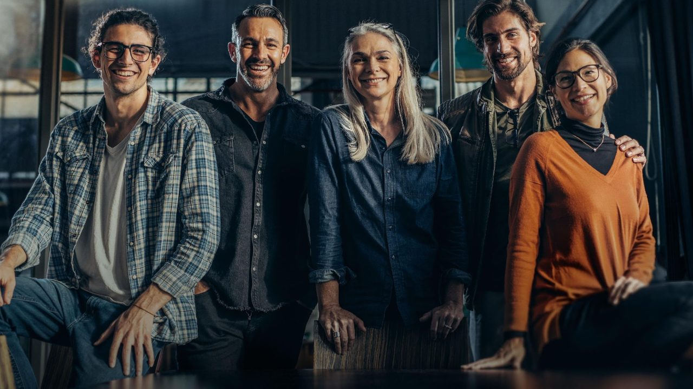

·
Fotografia · Aberturas
Imagens aprovadas
Banco de imagens aprovado pelo time de marca para uso em capas e divisórias de seção. Selecione áreas de baixa complexidade visual para posicionar logo e texto com bom contraste.
✓Aprovada

✓Aprovada